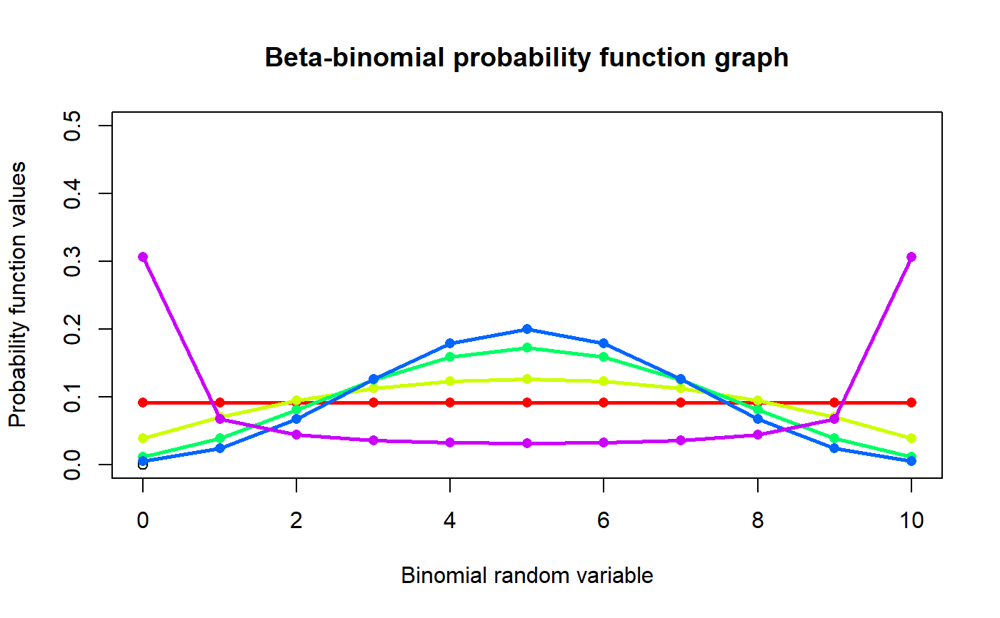
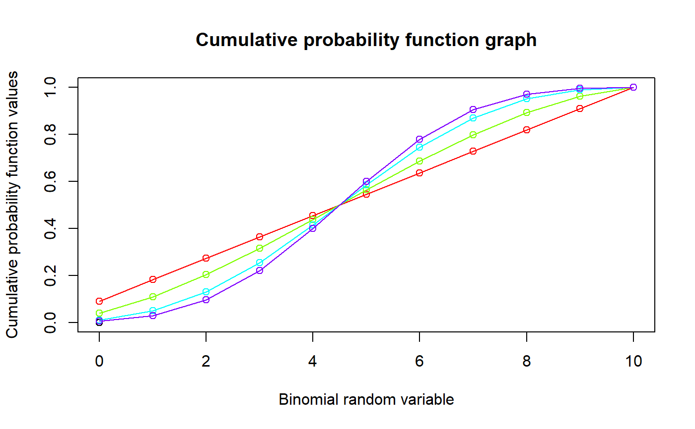

These functions provide the ability for generating probability function values and cumulative probability function values for the Beta-Binomial Distribution.
pBetaBin(x,n,a,b)
| x | vector of binomial random variables. |
|---|---|
| n | single value for no of binomial trials. |
| a | single value for shape parameter alpha representing as a. |
| b | single value for shape parameter beta representing as b. |
The output of pBetaBin gives cumulative probability values in vector form.
Mixing Beta distribution with Binomial distribution will create the Beta-Binomial distribution. The probability function and cumulative probability function can be constructed and are denoted below.
The cumulative probability function is the summation of probability function values.
$$P_{BetaBin}(x)= {n \choose x} \frac{B(a+x,n+b-x)}{B(a,b)} $$ $$a,b > 0$$ $$x = 0,1,2,3,...n$$ $$n = 1,2,3,...$$
The mean, variance and over dispersion are denoted as $$E_{BetaBin}[x]= \frac{na}{a+b} $$ $$Var_{BetaBin}[x]= \frac{(nab)}{(a+b)^2} \frac{(a+b+n)}{(a+b+1)} $$ $$over dispersion= \frac{1}{a+b+1} $$
Defined as B(a,b) is the beta function.
Young-Xu, Y. & Chan, K.A., 2008. Pooling overdispersed binomial data to estimate event rate. BMC medical research methodology, 8(1), p.58.
Available at: http://www.pubmedcentral.nih.gov/articlerender.fcgi?artid=2538541&tool=pmcentrez&rendertype=abstract.
Trenkler, G., 1996. Continuous univariate distributions. Computational Statistics & Data Analysis, 21(1), p.119.
Available at: http://linkinghub.elsevier.com/retrieve/pii/0167947396900158.
Hughes, G., 1993. Using the Beta-Binomial Distribution to Describe Aggregated Patterns of Disease Incidence. Phytopathology, 83(9), p.759.
Available at: http://www.apsnet.org/publications/phytopathology/backissues/Documents/1993Abstracts/Phyto_83_759.htm
#plotting the random variables and probability values col<-rainbow(5) a<-c(1,2,5,10,0.2) plot(0,0,main="Beta-binomial probability function graph",xlab="Binomial random variable", ylab="Probability function values",xlim = c(0,10),ylim = c(0,0.5))for (i in 1:5) { lines(0:10,dBetaBin(0:10,10,a[i],a[i])$pdf,col = col[i],lwd=2.85) points(0:10,dBetaBin(0:10,10,a[i],a[i])$pdf,col = col[i],pch=16) }#> [1] 9.184001e-05 3.993044e-04 1.095652e-03 2.434783e-03 4.810660e-03 #> [6] 8.881218e-03 1.585932e-02 2.832021e-02 5.310040e-02 1.180009e-01 #> [11] 7.670057e-01#> [1] 9.52381#> [1] 1.238444#> [1] 0.1923077#plotting the random variables and cumulative probability values col<-rainbow(4) a<-c(1,2,5,10) plot(0,0,main="Cumulative probability function graph",xlab="Binomial random variable", ylab="Cumulative probability function values",xlim = c(0,10),ylim = c(0,1))for (i in 1:4) { lines(0:10,pBetaBin(0:10,10,a[i],a[i]),col = col[i]) points(0:10,pBetaBin(0:10,10,a[i],a[i]),col = col[i]) }pBetaBin(0:10,10,4,.2) #acquiring the cumulative probability values#> [1] 9.184001e-05 4.911444e-04 1.586797e-03 4.021580e-03 8.832240e-03 #> [6] 1.771346e-02 3.357278e-02 6.189299e-02 1.149934e-01 2.329943e-01 #> [11] 1.000000e+00